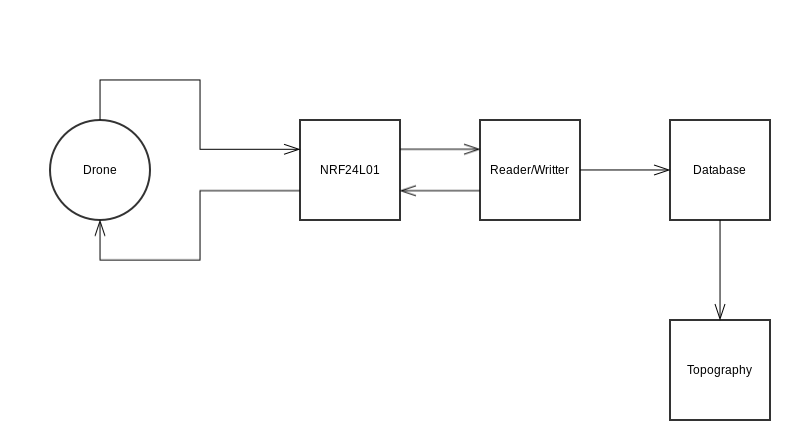

Njord Project
Build an awesome drone from scratch
Serveur
Jusqu'à maintenant les articles étaient essentiellement concentrés sur le drone, mais ne perdons pas de vu qu'un serveur doit être mis en place. Aujourd'hui le développement du serveur est presque terminé. La prise en main du gyroscope étant une tâche qui nous a pris beaucoup de temps, le serveur a été développé en parallèle.
Nous allons donc, par le biais de cet article, présenter comment le serveur fonctionne et faire une petite démonstration en vidéo.
Principe
Comme expliqué dans l'article sur la communication radio, le serveur et les drones vont communiquer via un petit émetteur/récepteur radio. Cette communication a pour but de récolter des informations nécessaires à la mise en place de la topographie de la zone, connaître l'état des drones, ou encore envoyer des ordres aux drones.
Chaque émetteur/radio est associé à une adresse. Ainsi, un drone connaît l'adresse du serveur et communique via cette adresse. Cependant, le serveur connaît un ensemble d'adresse (celle de chaque drone). Et lui, pourra communiquer avec chaque agent individuellement.
Le serveur lui est constitué par trois entités. Une entité physique (le communicateur radio), une partie qui va s'occuper d'enregistrer les données envoyées par les drones dans une base de données et une dernière partie qui est chargée de lire la base de données et dessiner la topographie correspondante.
Ainsi nous disposons de trois tâches indépendantes les unes des autres et qui tournent en parallèle. Car si le serveur n'était constitué que d'une seule tâche, on risquerait de rater certains messages dû au temps d'exécution d'un seul tour de boucle.
NRF24L01
Cette tâche consiste simplement à lire les messages envoyés par les drones et les recopier sur le port série du serveur. Si le serveur veut envoyer un ordre à un drone, il peut le faire via cette tâche. Par défaut le transmetteur/récepteur du serveur est en mode réception. Ainsi la boucle du serveur consiste simplement à lire les messages reçus. Mais si la tâche Lecture/Écriture écrit un message sur le port série, alors le serveur passera en mode transmetteur pour un court instant, afin de communiquer l'ordre au drone correspondant.

Lecture/Écriture
Le rôle de cette tâche consiste simplement à lire et écrire sur le port série. Par défaut le serveur lit de manière continue le contenu de ce port et ajoute chaque message dans la base de données. Si un ordre doit être envoyé à un drone, alors le serveur l'écrira sur le port série et la tâche NRF24L01 se chargera de l'envoie de l'ordre.
Topographie
Le principe d'un tour de boucle de cette tâche est de lire la première entrée de la base de données (elle se comporte comme une file). Elle va ensuite ajouter cette données dans une matrice qui représente la zone étudiée. Étant donné que la taille de la zone n'est pas connue à l'avance, cette matrice est constamment redimensionnée. Ensuite, le contenu de la matrice est dessiné à l'écran.
Par exemple le drone envoie [10, 12, 130]. Cela signifie que l'élément (10, 12) de la matrice vaut 130. Ainsi les indexes de la matrice représentent les coordonnées du point et la valeur représente la distance entre le drone et ce qu'il y a en dessous. Le dessin sera donc un ensemble de points de couleurs différentes. Les couleurs variant en fonction de la valeur des composantes de la matrice.

Implémentation
Voici le code de la première tâche :
#include
#include
#include
#define NB_DRONE 1
Communication com(8, 10);
bool ok;
uint8_t msgDrone[11];
uint8_t lenMsgDrone = sizeof(msgDrone);
int i = 0;
void setup() {
Serial.begin(9600);
ok = com.initRadio();
delay(1000);
if(!ok) {
Serial.println("Init error");
}
}
void loop() {
//For each drone write on serial port received message
for(i = 0; i < NB_DRONE; i++) {
ok = com.receiveMsg(msgDrone, lenMsgDrone, i + 1);
if(ok) {
Serial.print("d:");
Serial.print(msgDrone[0]);
Serial.print(";x:");
Serial.print(msgDrone[1]);
Serial.print(";y:");
Serial.print(msgDrone[2]);
Serial.print(";z:");
Serial.print(msgDrone[3]);
Serial.print(";s1:");
Serial.print(msgDrone[4]);
Serial.print(";s2:");
Serial.print(msgDrone[5]);
Serial.print(";s3:");
Serial.print(msgDrone[6]);
Serial.print(";s4:");
Serial.print(msgDrone[7]);
Serial.print(";s5:");
Serial.print(msgDrone[8]);
Serial.print(";s6:");
Serial.print(msgDrone[9]);
Serial.print(";msg:");
Serial.println(msgDrone[10]);
}
}
delay(400);
}
Cette tâche est implémentée en Arduino, puisqu'elle agit directement sur le NRF24L01. Elle parcourt l'ensemble de ses adresses connues et écrit le message sur le port série.
On peut remarquer que pour le moment la fonction permettant d'envoyer un message n'a pas encore été implémentée. Ceci sera fait plus tard.
Maintenant, regardons le code de la seconde tâche :
import serial
import redis
import sys
r = redis.StrictRedis(host='localhost', port='6379', db=0)
arduino = serial.Serial('/dev/ttyACM1', 9600)
while True:
msg = arduino.readline()
msg = [int(m.split(':')[1]) for m in msg[:-2].split(';')]
print msg
r.lpush(sys.argv[1], msg)
Nous avons choisi d'implémenter cette tâche en Python pour des raisons de simplicité. La base de données est en fait un client Redis. Ces bases de données sont très simples d'emploie. Et nous ne comptons pas faire des requêtes aussi complexes que le permet SQL, alors Redis se révélait être l'outil idéal.
Comme on peut le voir, le programme se contente de lire le contenu du port série et de le réécrire dans une liste Redis. Comme pour la tâche précédente la fonction permettant d'envoyer des ordres n'a pas encore été réalisée.
Et pour finir sur partie implémentation, voici la dernière tâche :
#!usr/bin/python3.4
#-*-coding:utf-8-*
import matplotlib.pyplot as plt
import numpy as np
from matplotlib import cm
import redis
import sys
name_area = sys.argv[1]
r = redis.StrictRedis(host = "localhost", port = 6379, db = 0)
data = np.zeros([0, 0])
fig, ax = plt.subplots()
cax = ax.imshow(data, cmap = cm.hot_r, origin = "lower")
ax.set_title(name_area + "'s topography")
cbar = fig.colorbar(cax, ticks = [0, 100, 200])
cbar.ax.set_yticklabels(["< 0", "100", "> 200"])
ax.patch.set_facecolor('white')
plt.show(block = False)
#Read from redis list and add to plot each new value available
while True:
e = r.blpop(name_area)[1][1:-1].replace(' ', '').split(',')
e = [int(i) for i in e]
if(e[1] > data.shape[0]): #We need to resize the matrix
tmp = np.zeros([e[1], data.shape[1]])
tmp[0:data.shape[0], 0:data.shape[1]] = data
data = tmp
if(e[2] > data.shape[1]):
tmp = np.zeros([data.shape[0], e[2]])
tmp[0:data.shape[0], 0:data.shape[1]] = data
data = tmp
if e[3] - e[9] < 0: #If distance > 5m
data[e[1] - 1, e[2] - 1] = 0
else:
data[e[1] - 1, e[2] - 1] = e[3] - e[9]
cax = ax.imshow(data, cmap = cm.hot_r, origin = "lower", interpolation = "nearest")
plt.draw()
Ce programme se connecte au même client Redis que la tâche précédente afin de lire ce qui a été inséré. La partie avant la boucle infinie concerne juste l'initialisation du graphique et de la matrice (initialisée comme une matrice de 0, de taille nulle). Au sein de sa boucle, cette tâche lit le contenu de la file Redis ajoute chaque entrée dans la matrice (la redimensionne si besoin) et dessine le contenu de la matrice à l'écran.
La dernière condition de la boucle est nécessaire pour une raison simple. La distance maximum mesurée par nos capteurs est de cinq mètres. Au-delà de cette valeur, le capteur renvoie des valeurs infinies. Dans ce cas, la distance entre le drone et ce qu'il y a en dessous sera négative. Il nous faut donc fixer cette valeur à 0 afin de garder une cohérence dans notre graphique.
Pour ce qui est du dessin, nous avons choisi d'utiliser la librairie MatPlotLib car elle est très simple d'utilisation et très répandue auprès de la communauté Python.
Démonstration
Pour finir avec cet article, voici une petite vidéo montrant l'exécution du serveur en temps réel. Nous sommes encore actuellement incapable de fournir la position du drone dans l'espace. Ainsi les positions envoyées au serveur ne sont pas réelles.